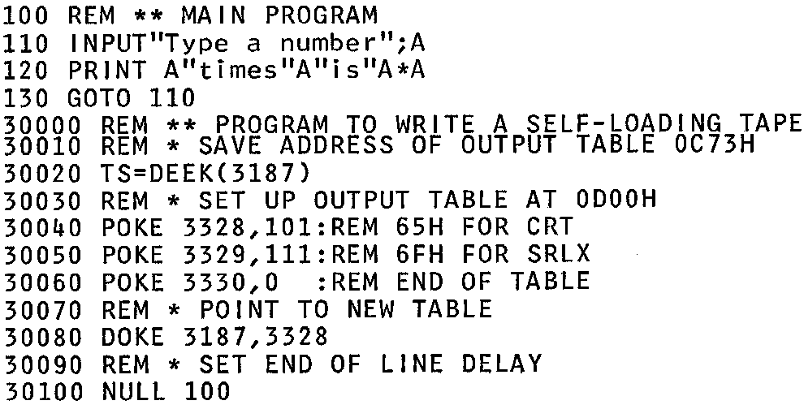

INMC 80 News |
June/July/August 1980 · Issue 1 |
| Page 42 of 48 |
|---|
The Generate command in T4 and Nas-Sys provides an easy way of writing a tape which contains a machine code program. When the tape is fed in, the program automatically starts to execute.
Mr. J. R. Hunt has kindly written to us to point out that the same can be done for Basic programs. It is necessary to do the following, once the Basic program is in memory.
The idea can be extended further with a string of commands:
| Print “Monitor” | (in case Basic is already in use – will give an error message if it isn’t) |
| PRINT “J” | (to run Basic) |
| (reply to ‘Memory size ?’ question) | |
| PRINT “CLOAD” | (to load program) |
| CSAVE “A” | (to save program to be loaded) |
| PRINT “RUN” | (to run the program that has been loaded). |
It is necessary to insert delays between these commands to allow time for them to be processed when they are fed back in. The NULL command should be used for this. It is easiest to put all this into a little program at the end of the main Basic program, and run this when you want to create a self loading tape.
Below is a listing of a complete program which will create a self loading copy of itself, as an example. The tape produced can be fed in either after switch on, or when the computer is already in Basic. It can be made quite small by removing all the comments.
LIST
| Page 42 of 48 |
|---|